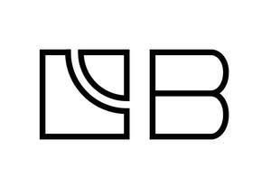

Trade Mark Journal No.2025/028 11 July 2025
UK00004227427 1 July 2025 (6,7,12)

- Class 6
- Balls for bearings, ironmongery, sintered metals, small items of metal hardware, washers; sintered shapes made of metal; goods of common metal namely springs and thrust washers.
- Class 7
- Bearings; ball bearings, bearings of plastic, and bronze; bearings for machines and motors, bushings, bearings; plain bearings; self-lubricating bearings; slip rings and brushes (being parts of machines); bearing supports; roller bearings, needle roller bearings, split roller bearings, rod end bearings, machined bearings, wrapped bearings, rolled bearings, composite bearings, bearing cages, cast bearings, bearing plates, bridge bearings, sintered metal bearings and thrust bearings; shaft bearings [parts of machines]; mounted bearings [parts of machines]; anti-friction bearings for machines; bearings for use in mechanical equipment, machinery, cranes, hydraulic cranes; bearings for motors; machined bearings; ball-bearings; bearings for machines; bearings for shafts; roller bearings [machine parts]; split roller bearings; bearings for mining equipment, grinding machines, quarrying equipment, cranes, and sewage flocculators.
- Class 12
- Bearings for land vehicles, forklift trucks, excavation vehicles, bulldozers and water vehicles; bearings for use in forklift trucks, excavation vehicles, bulldozers, vehicles and water borne vehicles; roller bearings for ships, cranes, and material handling equipment.
Bowman International Limited
Representative: Page, White & Farrer Limited